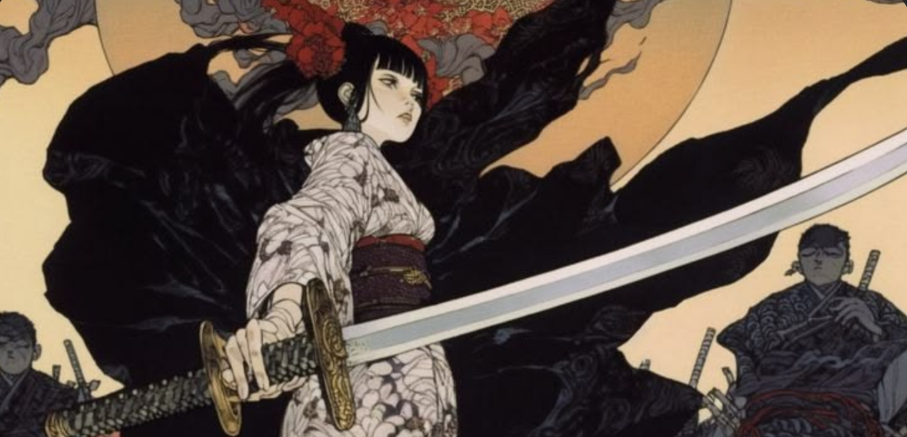
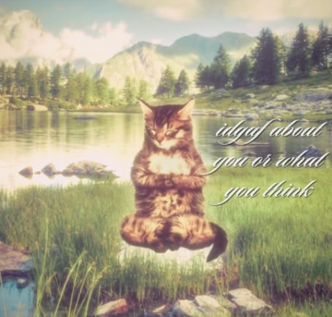

02 / MODERN STOA KÖŞESİ
Dışarısı kaos.
İçerisi? Senin alanın.
GÜNLÜK HAYAT, STOACI EDİSYON☼ 001

TEPKİ DEĞİL, TERCİH.STOACI BİR HATIRLATMA
Dışarıdaki gürültü senin değil. Tepkin ise tamamen senin.
Stoacı fikirlerden ilham alan, bugüne ait küçük bir yorum.
03 / MİNİ BİR RİTÜEL
Bir an dur.
Geri kalanı bekler.
Kısa bir nefes arası ver. Sayaç bitince günün ritmine geri dön.
Hazır olduğunda dokun.
